GAN（Generative Adversarial Network，生成对抗网络）由三个关键词组成:
核心机制:
这两个网络在训练过程中相互对抗、共同进化:
这个过程就是一个极小-极大（min-max）的优化问题。
为了更好地理解 GAN 的动机，我们先回顾一下变分自编码器 (VAE) 的局限性。
VAE 的局限性:
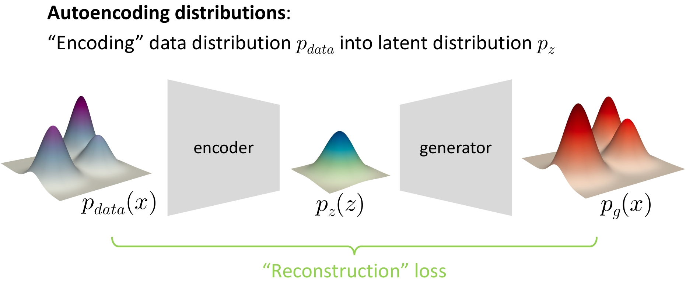
图1 VAE 的架构图
GAN 的优势:
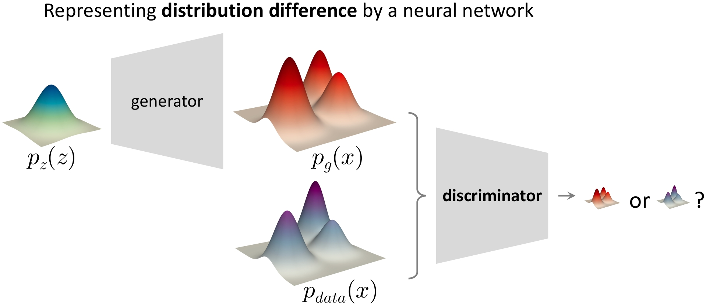
图2 GAN 生成结果对比
形象比喻:
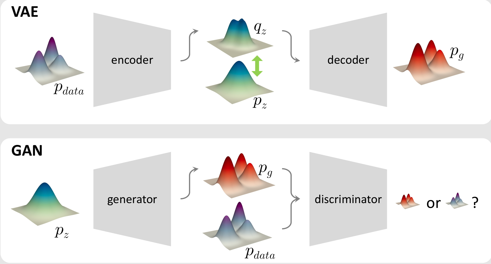
图3 VAE 和 GAN 的框架对比图
GAN 的训练过程包含两个关键步骤:
生成部分:
通过先验分布 \(z \sim p(z)\) 采样噪声向量，送入生成网络 \(G\)，生成一个假图片 \(x' = G(z)\)，然后送入判别网络 \(D\)，被判别为假（输出接近 0）。
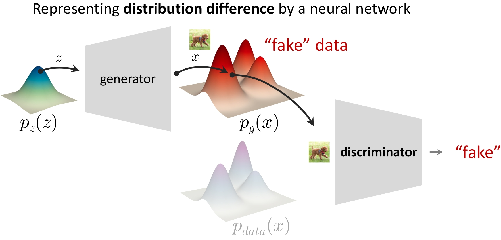
图4 GAN 生成部分示意图
对抗部分:
从真实数据集 \(x \sim p_{data}(x)\) 采样的真实图片，送入判别网络 \(D\)，被判别为真（输出接近 1）。
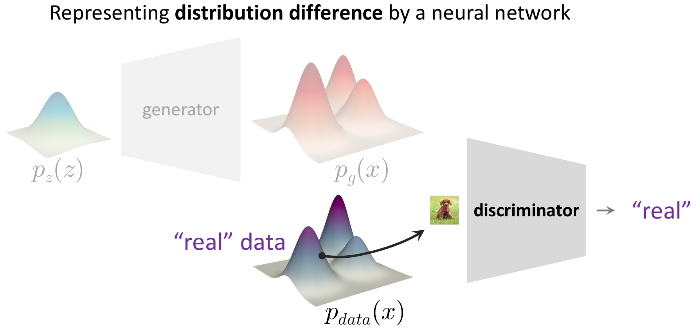
图5 GAN 对抗部分示意图
这里先给出论文（Goodfellow et al., 2014）中 GAN 的经典目标函数:
\[\min_G \max_D L(D, G) = \mathbb{E}_{x \sim p_{data}}[\log D(x)] + \mathbb{E}_{z \sim p_z}[\log(1 - D(G(z)))] \tag{1}\]
这个公式完美体现了 min-max 博弈: * \(\max_D\):判别器 D 希望最大化这个值。它希望对真实数据 \(x\) 输出接近 1（\(\log D(x)\) 趋近于 0），对生成数据 \(G(z)\) 输出接近 0（\(\log(1-D(G(z)))\) 也趋近于 0）。 * \(\min_G\):生成器 G 希望最小化这个值。由于第二项是负的，所以 G 实际上是在最大化 \(\mathbb{E}[\log D(G(z))]\)，即努力让 D 认为它的假样本是真实的。
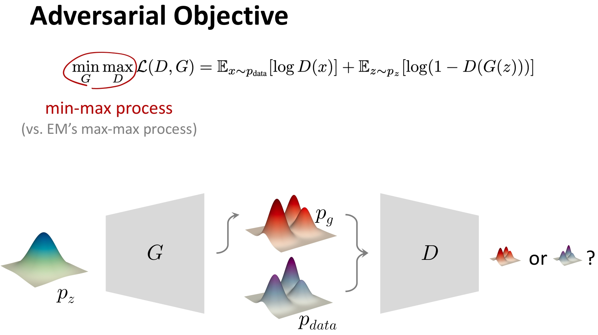
图6 GAN 的 Loss 图
接下来，我们看看在训练过程中这个目标函数是怎么发挥作用的。
在这个过程中，我们冻结生成网络 \(G\)，优化对抗网络 \(D\)，于是公式(1)就变成了
\[\begin{aligned} \max_D L(D) &= \mathbb{E}_{x \sim p_{data}}[\log D(x)] + \mathbb{E}_{z \sim p_z}[\log(1 - D(G(z)))] \\ &= \mathbb{E}_{x \sim p_{data}}[\log D(x)] + \mathbb{E}_{x \sim p_g}[\log(1 - D(x))] \end{aligned} \tag{2}\]
即:此时目标函数（对抗网络）为一个分类器，于是可以使用 BCE（Binary Cross Entropy）来描述。
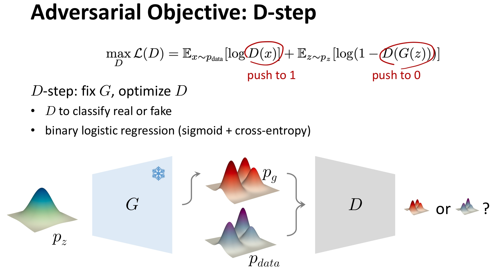
图7 冻结生成网络 G 的 Loss 图
在这个过程中，我们冻结对抗网络 \(D\)，优化生成网络 \(G\)，于是公式(1)就变成了
\[\min_G L(G) = \mathbb{E}_{z \sim p_z}[\log(1 - D(G(z)))] \tag{3}\]
即:此时目标函数（生成网络）的目标是生成假图片，让对抗网络 \(D\) 误以为真，于是可以使用最大似然估计来描述。
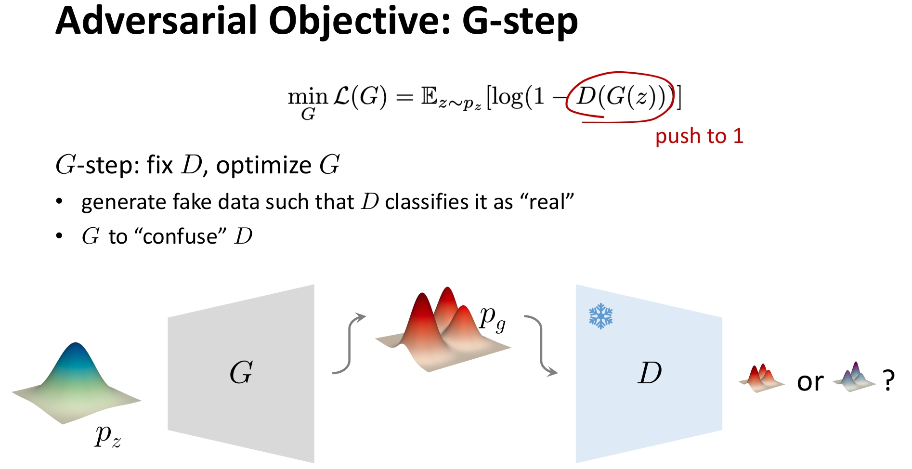
图8 冻结对抗网络 D 的 Loss 图
给定真实数据分布 \(p_{\text{data}}(x)\)，我们希望训练一个生成器 \(G\)，使其诱导的分布 \(p_g(x)\) 尽可能接近 \(p_{\text{data}}(x)\)。
GAN 通过引入一个判别器 \(D\)，将这个问题转化为一个极小极大博弈（minimax game）:
\[\min_G \max_D L(D, G)\]
通过详细的推导，我们可以得到三个有用的结论。
设定
使用最大似然估计（MLE）
我们希望 \(D(x)\) 能正确区分真假样本。对数似然为:
\[\mathcal{L}(D) = \mathbb{E}_{x \sim p_{\text{data}}}[\log D(x)] + \mathbb{E}_{x \sim p_g}[\log (1 - D(x))]\]
这正是标准的二分类交叉熵损失的负值（因为 MLE 要最大化似然）。
因此，判别器的目标是最大化该式。
而生成器希望让判别器犯错，即让 \(D(G(z))\) 接近 1，等价于最小化 \(\mathbb{E}_z[\log(1 - D(G(z)))]\)。
于是，整个博弈的目标函数为:
\[ \min_G \max_D L(D, G) = \mathbb{E}_{x \sim p_{\text{data}}}[\log D(x)] + \mathbb{E}_{z \sim p_z}[\log (1 - D(G(z)))] \]
这就是 GAN 的原始损失函数（minimax 形式）。
我们现在固定生成器 \(G\)（即固定 \(p_g\)），求使 \(L(D, G)\) 最大的判别器 \(D^*\)。
将期望写成积分形式:
\[L(D, G) = \int_x p_{\text{data}}(x) \\log D(x) \, dx + \int_x p_g(x) \\log (1 - D(x)) \, dx\]
由于积分是对每个 \(x\) 独立的，我们可以对每个 \(x\) 单独最大化被积函数:
\[f(D) = p_{\text{data}}(x) \log D + p_g(x) \log (1 - D)\]
对 \(D\) 求导（注意 \(D = D(x)\) 是标量）:
\[\frac{df}{dD} = \frac{p_{\text{data}}(x)}{D} - \frac{p_g(x)}{1 - D}\]
令导数为 0:
\[\frac{p_{\text{data}}(x)}{D} = \frac{p_g(x)}{1 - D}\] \[\Rightarrow p_{\text{data}}(x)(1 - D) = p_g(x) D\] \[\Rightarrow p_{\text{data}}(x) = D \left( p_{\text{data}}(x) + p_g(x) \right)\]
解得:
\[ D^*(x) = \frac{p_{\text{data}}(x)}{p_{\text{data}}(x) + p_g(x)} \tag{4}\]
✅ 结论1:对于任意给定的生成网络 \(G\)，其最优的对抗网络 \(D\) 为公式(4)。
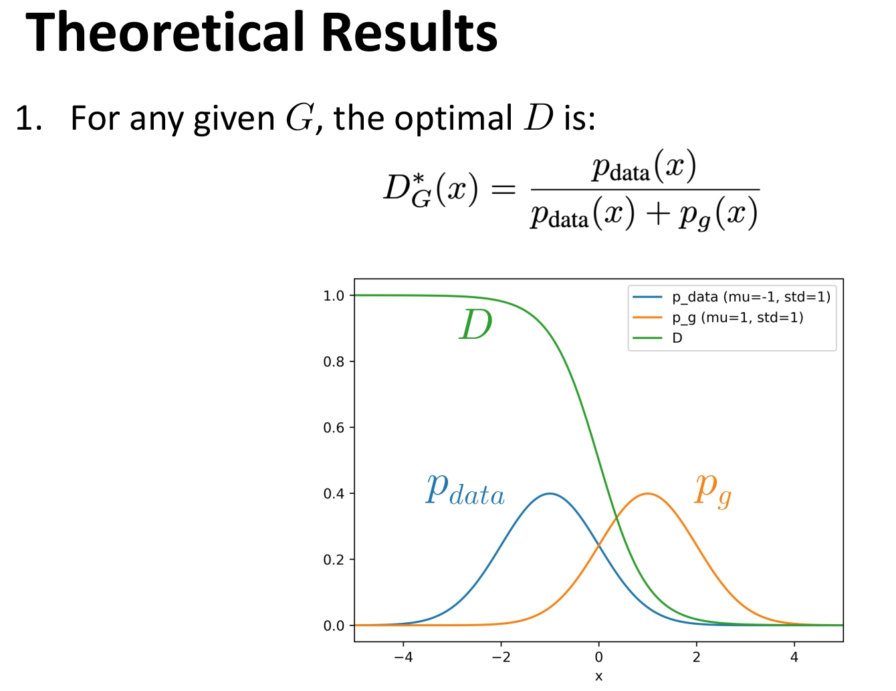
图9 最优判别器示意图
将 \(D^*(x)\) 代回目标函数:
\[L(D^*, G) = \mathbb{E}_{p_{\text{data}}} \left[ \log \frac{p_{\text{data}}(x)}{p_{\text{data}}(x) + p_g(x)} \right] + \mathbb{E}_{p_g} \left[ \log \frac{p_g(x)}{p_{\text{data}}(x) + p_g(x)} \right]\]
我们引入中间分布:
\[m(x) = \frac{p_{\text{data}}(x) + p_g(x)}{2}\]
注意到:
\[\frac{p_{\text{data}}(x)}{p_{\text{data}}(x) + p_g(x)} = \frac{1}{2} \cdot \frac{p_{\text{data}}(x)}{m(x)}, \quad \frac{p_g(x)}{p_{\text{data}}(x) + p_g(x)} = \frac{1}{2} \cdot \frac{p_g(x)}{m(x)}\]
因此，
\[\begin{aligned} L(D^*, G) &= \mathbb{E}_{p_{\text{data}}} \left[ \log \left( \frac{1}{2} \cdot \frac{p_{\text{data}}}{m} \right) \right] + \mathbb{E}_{p_g} \left[ \log \left( \frac{1}{2} \cdot \frac{p_g}{m} \right) \right] \\ &= \mathbb{E}_{p_{\text{data}}} \left[ \log \frac{p_{\text{data}}}{m} - \log 2 \right] + \mathbb{E}_{p_g} \left[ \log \frac{p_g}{m} - \log 2 \right] \\ &= \underbrace{\int p_{\text{data}} \log \frac{p_{\text{data}}}{m} dx}_{\text{KL}(p_{\text{data}} || m)} + \underbrace{\int p_g \log \frac{p_g}{m} dx}_{\text{KL}(p_g || m)} - 2 \log 2 \\ &= 2 \cdot \underbrace{ \left( \frac{1}{2} \text{KL}(p_{\text{data}} || m) + \frac{1}{2} \text{KL}(p_g || m) \right) }_{\text{JS}(p_{\text{data}} || p_g)} - 2 \log 2 \end{aligned}\]
即:
\[L(D^*, G) = 2 \cdot \text{JS}(p_{\text{data}} || p_g) - 2 \log 2 \tag{5}\]
✅ 结论2:在最优判别器 \(D^*\) 的情况下，GAN 的目标函数为公式(5)，即 GAN 优化目标为 JS 散度。
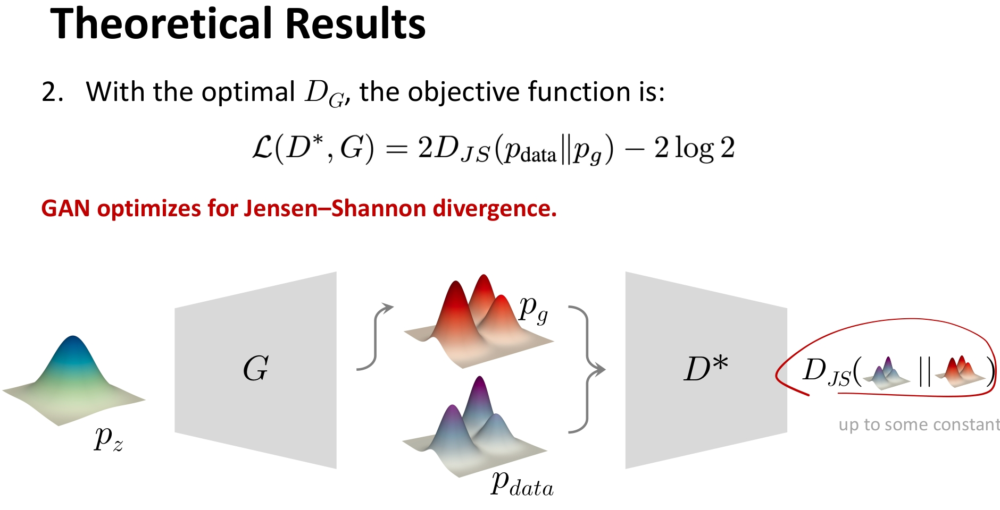
图10 JS 散度示意图
其中 Jensen-Shannon 散度（JS 散度） 定义为:
\[\text{JS}(P || Q) = \frac{1}{2} \text{KL}\left(P \,||\, \frac{P+Q}{2}\right) + \frac{1}{2} \text{KL}\left(Q \,||\, \frac{P+Q}{2}\right)\]
JS 散度的特点:
现在我们最小化 \(L(D^*, G)\) 关于 \(G\)（即关于 \(p_g\)）:
\[\min_G L(D^*, G) = \min_{p_g} \left[ 2 \cdot \text{JS}(p_{\text{data}} || p_g) - 2 \log 2 \right]\]
由于 \(-2 \log 2\) 是常数，等价于:
\[\min_{p_g} \text{JS}(p_{\text{data}} || p_g)\]
而 JS 散度具有以下性质: - \(\text{JS}(P || Q) \geq 0\) - \(\text{JS}(P || Q) = 0\) 当且仅当 \(P = Q\)（几乎处处相等）
因此，全局最小值在 \(p_g = p_{\text{data}}\) 时取得，此时:
\[D^*(x) = \frac{p_{\text{data}}(x)}{p_{\text{data}}(x) + p_{\text{data}}(x)} = \frac{1}{2}\]
即:
\[L(D^*, G^*) = 2 \cdot 0 - 2 \log 2 = -2 \log 2 \tag{6}\]
✅ 结论3:全局最优解在 \(p_g = p_{\text{data}}\) 时得到，结果为公式(6)。
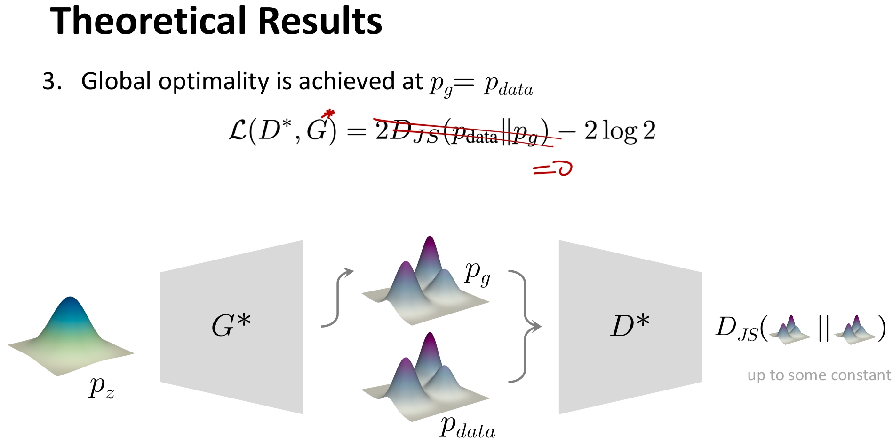
图11 最优生成器的Loss:展示了当 \(p_g = p_{\text{data}}\) 时，GAN达到全局最优，损失函数值为 \(-2 \log 2\)
最终，我们将三个结论汇总在一起，如图11所示:
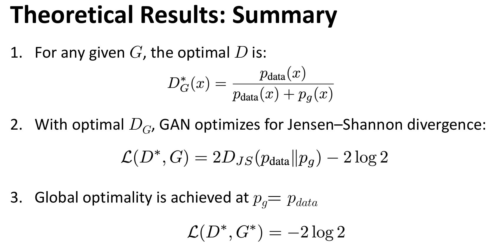
图12 GAN 三个重要的理论总结